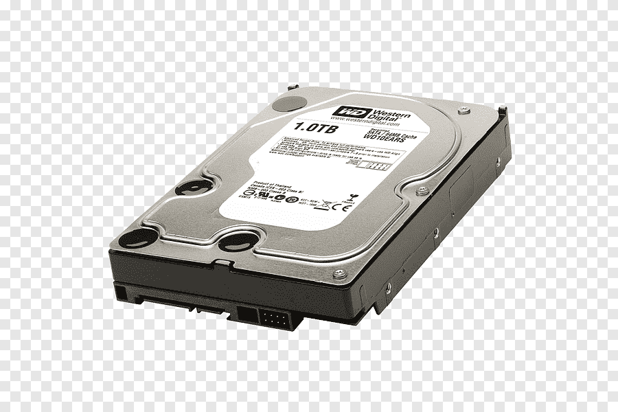

Witamy w Świat Komputerów!
Informacje o kartach graficznych
Dysk twardy jest urządzeniem do przechowywania, które ma za zadanie magazynować pliki i dane na długi czas. Każdy zapisany przez Ciebie na komputerze plik jest zapisywany na dysku twardym komputera. Dysk twardy jest jak szafka na pliki cyfrowe.